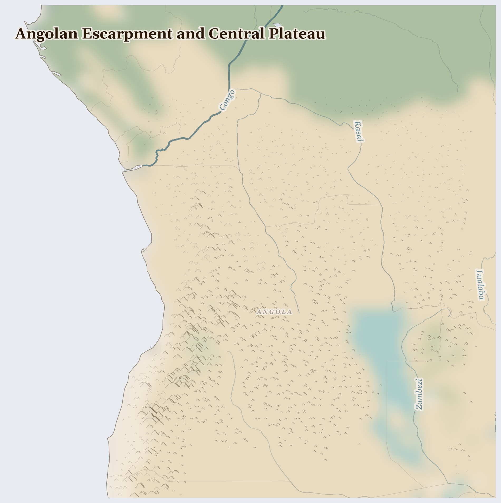

Angolan Escarpment and Central Plateau
Angola
Afrotropic
This is Angola — a land that climbs in giant steps from a hot coast up to cool green highlands. Rivers are born up on the plateau from the rain, and some of them run away south to make one of the most amazing wild places in all of Africa.
How Life Works Here
Off the coast, deep under the sea, there is oil, which ships carry away to run the world's cars and factories. In the rivers inland, people pan for diamonds by hand, standing in the water for hours. And farmers on the plateau grow maize and cassava and keep cattle.
Cabindan coastal communities (oil wealth extraction with no local benefit; suppressed FLEC separatist movement), Luanda's musseques (informal settlements).
Garimpeiros.
Ovimbundu farming families returning to mined agricultural land, Women managing food gardens and cassava processing (dominate rural food production), Demining teams (HALO Trust, MAG) …
What Is Happening
Angola is rich in oil and diamonds, and yet many families are poor — the treasure has mostly gone to a few, and to buyers far away. That is not fair, and it is right to notice it. But people are working to change it: teachers open schools in villages that never had one, and water projects are bringing clean wells to places that walked miles for a drink.
Something Wonderful
The rain that falls on Angola's highlands runs south into the desert and — hundreds of miles away, in Botswana — spreads out into the Okavango, where elephants, lions, and a million birds gather. Water born in one country blooms into a paradise in another. Angola waters a wonder it may never see.
Let's Do Something Together
Where Does Our Food Come From?
Look at something you ate today. Where did it grow? If you have a map, try to find the country. Food travels a very long way to reach our plates! In some places, families grow their own food, but when the rains do not come, the crops cannot grow.
- food packaging with country of origin
- world map or globe
For grown-ups
Global supply chains connect consumer choices to land use in crisis regions. Cash crop exports (coffee, cocoa, palm oil) often displace subsistence farming, making communities dependent on volatile markets.
Let Us Pray Together
God, bless the farmers who grow our food. Help families whose crops did not grow.
Leader: We pray for those who are hungry. For the millions across Angolan Escarpment and Central Plateau who cannot meet their daily food n..
All: Lord, hear our prayer.
Leader: We pray for Angola. For Angola, where multiple pressures are interacting and the situation is escalating.
All: Lord, hear our prayer.
Leader: We pray for the helpers. For humanitarian workers and missionaries in Angolan Escarpment and Central Plateau.
All: Lord, hear our prayer.
Leader: We pray for seeds of hope. For every act of resistance and care in Angolan Escarpment and Central Plateau.
All: Lord, hear our prayer.
O give thanks to the Lord, for he is gracious, for his steadfast love endures for ever. Let the redeemed of the Lord say this, those he redeemed from the hand of the enemy,
Collect
Lord of all power and might, the author and giver of all good things: graft in our hearts the love of your name, increase in us true religion, nourish us with all goodness, and of your great mercy keep us in the same; through Jesus Christ your Son our Lord, who is alive and reigns with you, in the unity of the Holy Spirit, one God, now and for ever.
Amen.
Talk About It
If your country had a chest of treasure buried under it, who do you think should get to share it, and how would you make that fair?
One Thing We Can Do
A diamond may have been dug by someone standing in a cold river all day. If you ever see one sparkle, don't just think it's pretty — say a prayer for the hands that found it, that they are paid fairly.